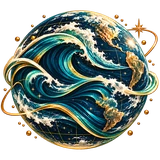
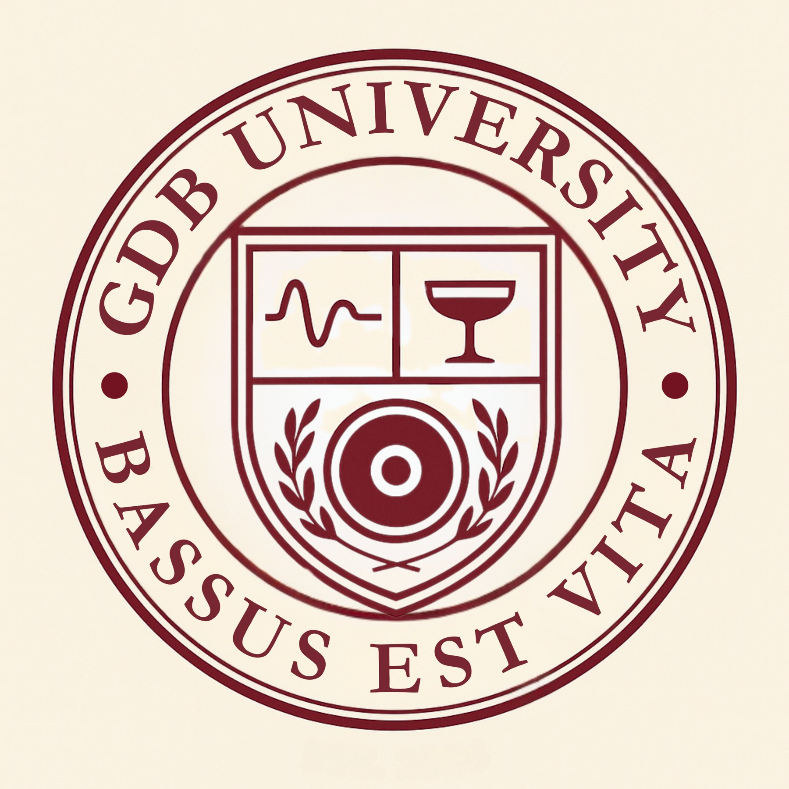
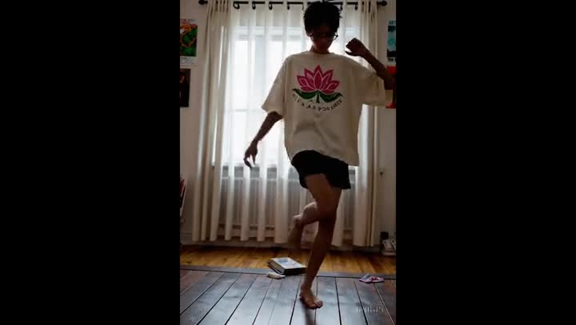
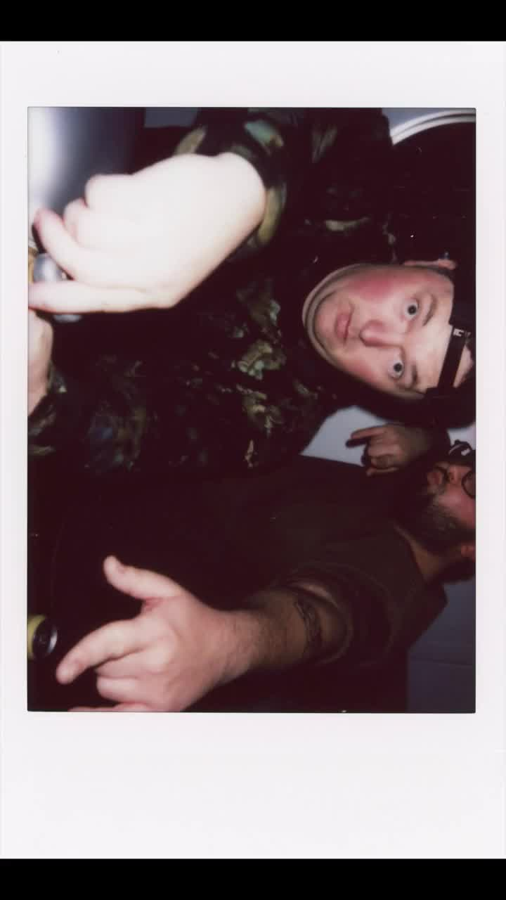
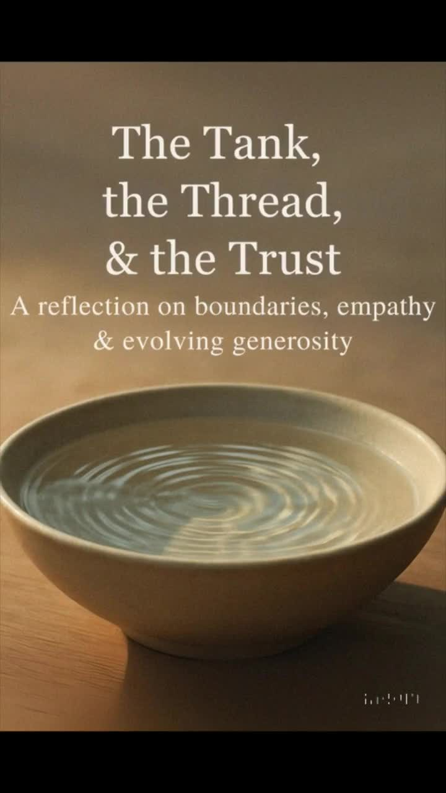

FOOTBALL · DISCOVERY · LEADERSHIP
Arsenal Academy Worlds
Explore Scouting, Cinema, the Vault and Draft Day. A standalone clubhouse for football, teamwork and discovery.
Enter Arsenal AcademyLeading a session? Presenter GuideOptional host tools

OLA HQOUR WAVES · ONE HOMEEIGHT CURRENTS · ONE HOME
From campus and club to life in motion, daily practice, and quiet reflection. Eight spaces with their own energy.

CAMPUS · SOUND · STUDIES
Orientation, campus objects, Low End Studies, and films. A fictional university built around bass and dancefloor energy.
Enter the campus ↗REAL FOOTBALL · PERSONAL FANDOM
The real club: live matchday, red-and-gold editorial studies, culture, and the bridge into La Ola FC.
Enter the Arsenal world ↗FOOTBALL · DISCOVERY · LEADERSHIP
Explore Scouting, Cinema, the Vault and Draft Day. A standalone clubhouse for football, teamwork and discovery.
Enter Arsenal AcademyLeading a session? Presenter GuideOptional host tools


LIFE · MOTION · THE EDIT SHELF
Three recovered films, everyday memories, and a life log that keeps moving on TikTok.
Open the edit shelf ↗HEALTH · HABITS · DAILY PRACTICE
A simple daily check-in for movement, energy, and reflection. Optional notes stay on your device.
Open the daily check-in ↗
PHILOSOPHY · FLOW · REFLECTION
A recovered reflection on boundaries, energy, and what we choose to carry. A quieter current.
Enter the reflection ↗FRIENDSHIP · MUSIC · MEMORIES
A sunset clubhouse for the people who look out for people. Step into the soundtrack, keepsakes and illustrated rooms.
Private beta · Your Purple Angel Pass is required. Independent and unofficial.
Open HOME BASE · New tabMASCOT · HUMOR · EVERYDAY JOY
Mascot, humor, and everyday joy. A playful entrance into the Capybara current.
Meet the mascot world ↗